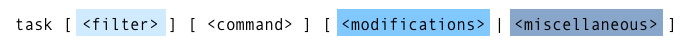
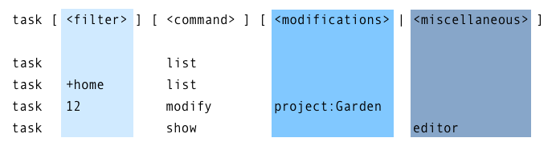
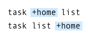
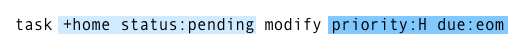
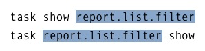
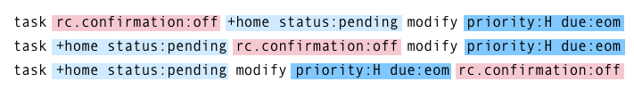

Command Line Syntax
Taskwarrior has a flexible command line syntax, but it may not be clear at first what the underlying structure means. Here is the general form of the syntax:

There are four parts to the syntax (filter, command, modifications, and miscellaneous), and each part is optional.
Command
Each time you run Taskwarrior, you are issuing a command either explicitly, or implicitly with the default command (the default.command configuration setting). The command you specify determines how the command line is understood by Taskwarrior. Here are some examples of that:

The first example, task list is a report with no filter, and the second, task +home list is with a filter. The third, task 12 modify project:Garden has both a filter and modifications. The last example, task show editor has a miscellaneous argument.
Taskwarrior looks for the first argument on the command line that looks like an exact command name, and failing that, looks for an abbreviated command name. It is better to use the full name of a command to avoid ambiguity.
It is the position of the command argument, and the type of command that determines how the arguments are understood.
Filter
A filter is a means of addressing a subset of tasks. Because filters are optional, the simplest case is no filter. A command with no filter addresses all tasks.
Generally filter arguments appear before the command, so any arguments to the left of the command are considered filter arguments.
There is a special case, in which a command that does not support modifications or miscellaneous arguments, expects only filter arguments, and so they can appear before or after the command, without confusing Taskwarrior:

Modifications
If a command accepts modifications, they generally appear after the command. Most commands that accept modifications also accept filters, and so the filter arguments appear before the command, while the modifications appear after. Here is an example:

This command specifies a compound filter, consisting of more than one term. These terms are logically combined with an and operator by default, unless otherwise specified. In this case, tasks that have both the home tag, and a status value of pending are to be modified.
The modifications, appearing after the command, set the priority to High, and the due date to the end of the month (eom).
Because the filter is evaluated at runtime, we don't know how many tasks will be modified. It could be none, one, many or all of the tasks. It could be determined with:
task +home status:pending count
The user writing this command would have an idea of how many tasks this will affect, but this is just an example, with no contextual data shown.
Miscellaneous
Some commands accept neither a filter, nor modifications, but do accept miscellaneous arguments. An example is the show command, that queries configuration settings, and does not accept a filter:

This is another special case, in which the command only accepts miscellaneous arguments, and so they can appear before or after the command.
Overrides
Overrides are temporary values for configuration settings, and can be specified anywhere on the command line, because they are not considered to be either filter, modification or miscellaneous. In fact, the command itself doesn't see the overrides, instead they are handled before the command runs.

There can be any number of overrides on the command line, and they have no effect on the syntax.